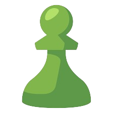
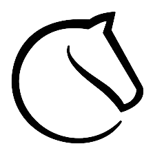
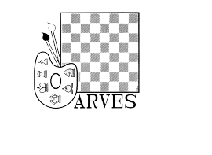
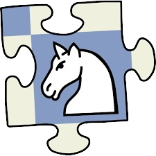
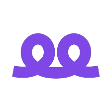
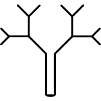
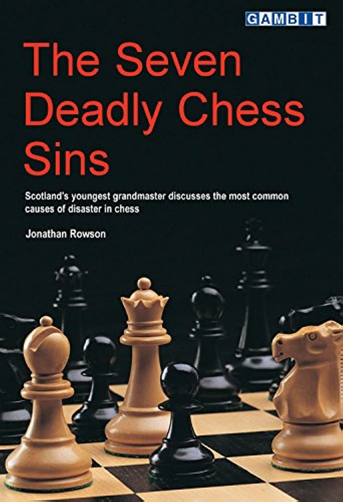

-
Chess.com
Jouez aux échecs gratuitement sur Chess.com avec plus de 150 millions de membres du monde entier. Jouez des parties avec vos amis ou contre l'ordinateur ! -
Lichess
Jeu d'échecs gratuit en ligne. Jouez aux échecs immédiatement avec une interface simple. Pas d'inscription obligatoire, pas de publicité, pas de plugin. -
Chessable
Chessable est le meilleur moyen pour les joueurs débutants et expérimentés d'apprendre et de s'entraîner aux échecs en ligne. Apprenez les échecs avec les cours dispensés par les meilleurs joueurs du monde, notamment Magnus Carlsen, Fabiano Caruana, Anish Giri, Judit Polgar et bien d'autres. -
Chessly
De courtes leçons vidéo couvrant des idées dans un style facile à suivre et succinct -
arves.org
La résolution d'études de fin de partie est devenue un outil de travail majeur dans l'entraînement aux échecs moderne, alliant l'instructif à l'agréable. -
ChessPuzzle.net
Maîtrisez les tactiques d'échecs avec Puzzle Academy · Votre solution d'apprentissage personnalisée · Apprenez systématiquement les motifs tactiques clés -
Aimchess
Avec Aimchess, analyser vos parties récentes pour avoir vos statistiques sur vos ouverures, tactiques, fins de parties,capitalisation d'avantage, Ingéniosité et votre gestion du temps -
ChessBook
Chessbook est le moyen le plus rapide de créer un répertoire d'ouverture à toute épreuve. -
OpeningTree
Vue consolidée de toutes vos parties d'échecs sur chess.com, lichess, parties de grand maître ou pgn personnalisé. Préparez-vous contre vos adversaires en analysant tous leurs matchs en un seul -
7 Deadly Chess Sins
Dans ce livre, Jonathan Rowson enquête, dans son style inimitable, sur les principales raisons pour lesquelles les joueurs d'échecs s'égarent parfois horriblement, en se concentrant sur les pièges psychologiques sous-jacents :- La mauvaise pensée (inutile ou erronée)
- L’aveuglement (opportunités manquantes ; manque de résolution)
- L’entêtement du résultat(trop de souci du résultat du jeu)
- Le matérialisme(manque d'attention aux facteurs non matériels)
- Égoïsme (conscience insuffisante de l'adversaire et de ses idées)
- Perfectionnisme (manquer de temps, essayer trop fort)
- Relâchement (« perdre l'intrigue » ; dérive ; mauvaise concentration)
- haut de la page
Outils
Jouer:
Apprendre:
Prep:
Livres: